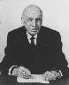
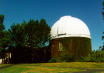
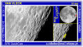

2026-07-05
Famous Van Vlecks
Cousin John H

My second cousin once removed,
 John H. Van Vleck,
one of the
fathers of the atomic bomb, worked on radar at the
MIT Radiation Laboratory during World War II, then was a professor of physics at Harvard, and won the
1977 Nobel Prize in Physics
(along with Anderson and Mott, for "Electronic structure of magnetic and disordered solids").
John H. Van Vleck,
one of the
fathers of the atomic bomb, worked on radar at the
MIT Radiation Laboratory during World War II, then was a professor of physics at Harvard, and won the
1977 Nobel Prize in Physics
(along with Anderson and Mott, for "Electronic structure of magnetic and disordered solids").
He was at the Institute for Advanced Studies in Princeton before the war, where he worked with many of the famous physicists of the time. He applied Dirac's quantum mechanics to the electric and magnetic properties of atoms, and wrote The Theory of Electric and Magnetic Susceptibilities (Oxford, Clarendon Press, 1932). His theoretical work led to the formation of Los Alamos Laboratories.
John H. Van Vleck wrote a festschrift paper in 1971 titled "Group theory for permutation degeneracy in four electrons, and the Pauli exclusion principle," and contributed "Travels with Dirac in the Rockies" to a biography of Dirac. He is regarded as the "Father of Modern Magnetism;" in his later work he studied chemical bonding in crystals, magnetic resonance, computer memories, and the cross correlation of digitized signals. He also won the 1966 National Medal of Science. (I met him twice. Really interesting person.) He died in 1981.
One of John H's thesis students at Wisconsin was John Vincent Atanasoff, a computer pioneer.
John H's father was a famous mathematician,  Edward Burr Van Vleck,
whose name is on the Van Vleck Mathematics Building at the University of Wisconsin.
Felix Klein was his thesis adviser at Göttingen in 1893.
(He's known for the "Van Vleck construction," an unmeasurable set.)
Edward Burr Van Vleck,
whose name is on the Van Vleck Mathematics Building at the University of Wisconsin.
Felix Klein was his thesis adviser at Göttingen in 1893.
(He's known for the "Van Vleck construction," an unmeasurable set.)

There is also the Van Vleck Observatory at Connecticut Wesleyan University, named after John Monroe Van Vleck (1833-1912), Edward's father.
Cousin Jane's book
All of us Van Vlecks are descended from Tielman Van Vleeck, who arrived in New Amsterdam aboard the ship The Gilded Beaver in 1658 from Amsterdam. Tielman's family originally came from near Maastricht, in the Netherlands. There was a hamlet named Vliek, part of Ulestraten, now near the Maastricht airport. Van Vleeck means "guy from Vliek."
According to Coen Eggen, "The house from which Tielman started his emigration to the later US doesn't exist anymore, but there still is a 'maison de plaisance' built in the early 30's of the 18th century which is called the castle Vliek." Tielman rapidly rose to be regarded as the second best lawyer in New Amsterdam and was one of the first to cross the Hudson and settle in what is now known as New Jersey, in the town of Bergen. He was appointed "schout" of Bergen court in 1661.
Here is a web page at ancestry.com describing a book written by my cousin Jane Van Vleck in 1955:
 Van Vleck, Jane, Ancestry and descendants of Tielman Van Vleeck of Niew Amsterdam: with some descendants of Benjamin Van Vleck and Marinus Roelofse van Vleckeren or Van Vlack, New York, 1955.
(Looks like you can register to read the book online.)
Van Vleck, Jane, Ancestry and descendants of Tielman Van Vleeck of Niew Amsterdam: with some descendants of Benjamin Van Vleck and Marinus Roelofse van Vleckeren or Van Vlack, New York, 1955.
(Looks like you can register to read the book online.)
Jane was daughter of the astronomer John Monroe Van Vleck. The book's frontispiece depicts a 17th century engraving, showing the Siege of Maastricht in 1579; At that time Michiel van Vleeck, Tielman's uncle, was burgomaster. (Spain ruled the Netherlands then; Maastricht was besieged by the Catholic Spanish who opposed the Dutch Protestant Rebels. The Dutch conquered Maastricht back in 1632. Then the French conquered the city in 1673, 1748 and 1794.)
Here is a table of Van Vlecks, derived from cousin Jane's book:
???? - 1453 Johan (m. Elisabeth)
???? - 1505 Hubertus (m. Katherine Roseller)
???? - ???? Peter (m. Lucie)
???? - 1553 Houbert (m. Beatrix Van Heckenrade)
1548 - 1633 Tyleman (m. Maria Moors)
1614 - 1670 Tielman (m. Magdalena Ketwig Herlin)
1644 - 1695 Isaac (m. Catalyntie Lubberts de Lanoy)
1688 - 1742 Abraham (m. Maria Kierstede Kip)
1714 - 1803 Johannis (m. Petronella Ryckman Kip)
1743 - 1785 Abraham Kip (m. Margaret Nottingham Cantine)
1770 - 1810 John (m. Sarah Elmendorf Kool Tack)
1801 - 1860 Abraham Kip (m. Catharine Fredericka Graff Bartholomew)
1835 - 1915 Frederick Bartholomew (m. Margaret Louise Brackett Cary)
1879 - 1943 James Brackett (m. Harriot Fay Adams Bayle)
1915 - 1976 George Bayle (m. Jane C.)
1944 - ---- Thomas H. (me) (m. Lilli F.)
1981 - ---- Jesse (my son) (m. Gabrielle G.)
Other Van Vlecks
There are lots of Van Vlecks in upstate New York, though not all are descendants of Tielman:
some 1700's New York descendants of the Norwegian Van Vleckeren family started using the surnames  "Van Vlack" and "Van Vleck."
"Van Vlack" and "Van Vleck."
There's a town called Van Vleck, Texas;
there's a Boy Scout camp called the Van Vleck Ranch outside Sacramento, CA;
and when we moved to Silicon Valley, our real estate agent was from Van Vleck Realty.
There's also a Van Vleck avenue in Atlanta, and another in Montclair NJ,
on which the  Van Vleck House & Gardens sits (famous rhododendrons and azaleas).
Van Vleck House & Gardens sits (famous rhododendrons and azaleas).
Crater on the Moon

There's a Van Vleck crater on the Moon, named after John Monroe Van Vleck:
- Latitude: -1.9 degrees S
- Longitude: 78.3 degrees E
- Size: 31 kilometers
I'd love to visit it someday.
Van Vlecks on the Internet
A little web surfing reveals that there's a Prof. Erik S. Van Vleck at the Colorado School of Mines, involved in the study of chaotic numerics; his father is the late Prof. Fred S. Van Vleck at the University of Kansas, who published about differential equations and control theory; a Prof. L. Dale Van Vleck at University of Nebraska-Lincoln who writes about horses & animal genetics; and Van Vleck Chapters of both the Texas Extension Homemakers Association and the Federation of Texas A&M University Mothers Club. Amelia E. Van Vleck of the University of Texas at Austin writes about French troubadours. Phyllis Van Vleck is a poet in Baxter County, Arkansas. Sigma Xi was founded by Prof. Frank Van Vleck at Cornell in 1886. There's also a Van Vleck Residence Hall at Hope College in Holland, Michigan.
I went to a meeting of people implementing the SET electronic commerce protocol in July 1997, and met Paul Van Vleck, brother to Erik and son of Fred.
Got a nice mail message from Stanley O. Van Vleck on 01/23/97.
I have also had mail from other Van Vlecks, such as Tielman, who graduated from Colby College and has a PhD from Columbia, and Sarah, who lives in Dartmouth Mass.
So get used to Van Vlecks; there's a lot of us.
18 Oct 2013